Some functions of the accessibility package, such as
floating_catchment_area() and gravity(), use
decay functions to continuously discount the weight of opportunities as
travel costs become larger. For convenience, the package ships with some
of the most frequently used functions in the accessibility literature,
which are discussed below. Additionally, users can pass custom functions
to convert travel costs into weights to be applied the opportunities,
which is discussed further down in this the vignette.
Also known as the step decay function, it’s most commonly used in cumulative opportunities measures.
\[ \begin{aligned} f(t_{ij})= \left\{ \begin{array}{ll} 1 & \quad \text{for }t_{ij} \leq T \\ 0 & \quad \text{for }t_{ij} > T \end{array} \right.\\ \end{aligned} \]
Where \(t_{ij}\) is the travel cost between origin i and destination j, and \(T\) is the travel cost cutoff.
Weights decay linearly until the travel cost cutoff is reached. From this point onward weights assume the value of 0.
\[ \begin{aligned} f(t_{ij})= \left\{ \begin{array}{ll} (1 - t_{ij}/ T) & \quad \text{for }t_{ij} \leq T \\ 0 & \quad \text{for }t_{ij} > T \end{array} \right.\\ \end{aligned} \]
Where \(t_{ij}\) is the travel cost between origin i and destination j, and \(T\) is the travel cost cutoff.
\[ \begin{aligned} f(t_{ij})= e^{(-\beta t_{ij})} \end{aligned} \]
Where \(t_{ij}\) is the travel cost between origin i and destination j, and \(\beta\) is the parameter that tells the speed of decay.
\[ \begin{aligned} f(t_{ij})= \left\{ \begin{array}{ll} 1 & \quad \text{for } t_{ij}\leq 1 \\ t_{ij}^{-\beta} & \quad \text{for }t_{ij} > 1 \end{array} \right.\\ \end{aligned} \]
Where \(t_{ij}\) is the travel cost between origin i and destination j, and \(\beta\) is the parameter that tells the speed of decay.
Similar to the binary function, but can take an arbitrary number of steps. The current implementation assumes that values changes at each step, instead of right after it.
\[ \begin{aligned} f(t_{ij})= \left\{ \begin{array}{ll} 1 & \quad \text{for } t_{ij} \lt S_{1} \\ v_{1} & \quad \text{for } t_{ij} \lt S_{2} \\ v_{2} & \quad \text{for } t_{ij} \lt S_{3} \\ ... \\ v_{n-1} & \quad \text{for } t_{ij} \lt S_{n} \\ v_{n} & \quad \text{otherwise} \\ \end{array} \right.\\ \end{aligned} \]
Where \(t_{ij}\) is the travel cost between origin i and destination j, \(n\) is the total number of steps, \(S_{k}\) is the travel cost cutoff that delimits the \(k^{th}\) step, and \(v_{k}\) is the value that the decay function assumes at the \(k^{th}\) step.
library(accessibility)
library(data.table)
library(ggplot2)
binary <- decay_binary(cutoff = 50)
linear <- decay_linear(cutoff = 50)
negative_exp <- decay_exponential(decay_value = 0.2)
inverse_power <- decay_power(decay_value = 0.2)
stepped <- decay_stepped(steps = c(30, 60, 90), weights = c(0.66, 0.33, 0))
travel_costs <- seq(1, 100, 0.1)
weights <- data.table(
minutes = travel_costs,
binary = as.numeric(binary(travel_costs)),
linear = linear(travel_costs),
negative_exp = negative_exp(travel_costs),
inverse_power = inverse_power(travel_costs),
stepped = stepped(travel_costs)
)
# reshape data to long format
weights <- melt(
weights,
id.vars = "minutes",
variable.name = "decay_function",
value.name = "weights"
)
ggplot(weights) +
geom_line(
aes(minutes, weights, color = decay_function),
show.legend = FALSE
) +
facet_wrap(. ~ decay_function, ncol = 2) +
theme_minimal()
Any function that takes a numeric vector of travel costs
and returns a numeric vector, with the same length of
input, of weights to be applied to the opportunities can be considered a
decay function.
Let’s say that we wanted to use a very simple decay function that defines the weights as the multiplicative inverse of travel cost - i.e. \(travel\_cost^{-1}\). We just have to take care of the case when travel cost is less than 1, in which case the function would return values greater than 1 and which we will replace with 1, but otherwise the implementation is pretty simple:
my_decay <- function(travel_cost) {
weights <- 1 / travel_cost
weights[weights > 1] <- 1
return(weights)
}Given a numeric vector of travel costs, the function
returns a numeric vector of weights:
my_decay(c(0, 0.5, 1, 2, 5, 10))
#> [1] 1.0 1.0 1.0 0.5 0.2 0.1Using this function to calculate accessibility is as easy as any of the built-in decay functions:
data_dir <- system.file("extdata", package = "accessibility")
travel_matrix <- readRDS(file.path(data_dir, "travel_matrix.rds"))
land_use_data <- readRDS(file.path(data_dir, "land_use_data.rds"))
custom_gravity <- gravity(
travel_matrix,
land_use_data,
opportunity = "jobs",
travel_cost = "travel_time",
decay_function = my_decay
)
head(custom_gravity)
#> id jobs
#> 1: 89a88cdb57bffff 11210.42
#> 2: 89a88cdb597ffff 10775.77
#> 3: 89a88cdb5b3ffff 11480.25
#> 4: 89a88cdb5cfffff 12689.44
#> 5: 89a88cd909bffff 11361.66
#> 6: 89a88cd90b7ffff 12563.65In fact, we could achieve the exact same result as we did with our
custom function using decay_power(1):
power_gravity <- gravity(
travel_matrix,
land_use_data,
opportunity = "jobs",
travel_cost = "travel_time",
decay_function = decay_power(1)
)
head(power_gravity)
#> id jobs
#> 1: 89a88cdb57bffff 11210.42
#> 2: 89a88cdb597ffff 10775.77
#> 3: 89a88cdb5b3ffff 11480.25
#> 4: 89a88cdb5cfffff 12689.44
#> 5: 89a88cd909bffff 11361.66
#> 6: 89a88cd90b7ffff 12563.65A small difference is that in the first example we passed
my_decay (the function object) to the
decay_function parameter, whereas in the second we passed
the function call decay_power(1). That’s because
decay_power() (and the other built-in decay functions as
well) is actually a function “factory”: it’s a function that returns a
function, as we can see below:
decay_power(1)
#> function (travel_cost)
#> {
#> weights <- travel_cost^(-decay_value)
#> weights[weights > 1] <- 1
#> return(weights)
#> }
#> <bytecode: 0x55e574985238>
#> <environment: 0x55e574835748>This is because the built-in functions aim to be as generally used as possible, so we have to able to use them with different parameters, cutoffs, etc. In practice, every time we call these functions we create another function that calculates travel costs exactly as we want.
When we create our own custom decay function, we don’t have to think
about general cases, just the cases that matter for us. Creating a
simple function that converts one vector into another, therefore,
suffices our needs. In both examples above, therefore, we’re passing a
function to decay_function - one we created ourselves and
another created by decay_power().